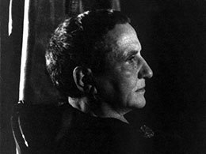
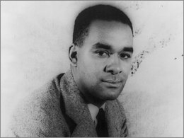
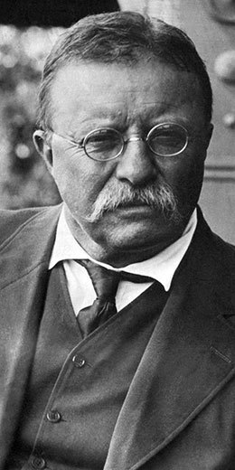

News
LOA to publish a never-before-seen novel by the legendary author of Native Son

News
Adopt this book: Gertrude Stein: Writings 1932–1946

Video
Octavia E. Butler: “I could become a writer, or I could die really young”
A TV talk show segment from 2000 is an engaging way to learn more about the fiction writer who most recently joined the Library of America series.
“I am blind in one eye and cannot hear high-frequency sounds; therefore I am an entomologist.” David Quammen, editor of the new LOA edition of E. O. Wilson's works, summarizes the fascinating career of the famous naturalist.

Video
LOA LIVE: Online programs inspired by Library of America publications
Story of the Week
Joan Didion, “L.A. Noir”
New & Noteworthy
John Updike: Novels 1978-1984
Richard Wright: The Man Who Lived Underground
Edward O. Wilson: Biophilia, The Diversity of Life, Naturalist
Women’s Liberation! Feminist Writings that Inspired a Revolution & Still Can

Octavia E. Butler: Kindred, Fledgling, Collected Stories
Featured Writers

Joan Didion
Learn more

Ursula K. Le Guin
Learn more

John Updike
Learn more

Frederick Douglass
Learn more

Theodore
Roosvelt
Learn more
Featured Writers
| Books for Young Readers | The Founders | Hollywood |